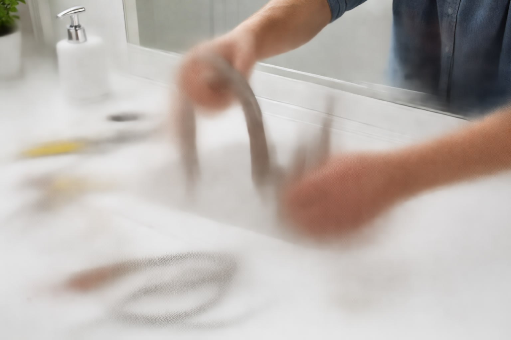

How to Replace a Bathroom Faucet: Step-by-Step Guide (2026)

Bathroom Products Expert • 10+ years research

Quick Answer
Replacing a bathroom faucet is a beginner-friendly DIY project that takes 30-60 minutes and requires only basic tools: an adjustable wrench, basin wrench, plumber's tape, and a bucket. You will save $150-$300 in plumber fees. The key steps are shutting off water supply valves, disconnecting old supply lines, removing the old faucet, installing the new one, and reconnecting supply lines.
Table of Contents
Tools and Materials You Will Need
Before starting, gather everything you need so the project goes smoothly without mid-job hardware store runs:
Essential Tools
- Adjustable wrench for supply line connections and mounting nuts
- Basin wrench for reaching mounting nuts in tight spaces under the sink
- Bucket and towels for catching residual water when disconnecting lines
- Flashlight or headlamp for visibility under the vanity cabinet
- Plumber's tape (Teflon tape) for sealing threaded connections
- Channel-lock pliers for stubborn connections
- Putty knife or scraper for removing old caulk and debris from the sink surface
Materials
- New bathroom faucet compatible with your sink's hole configuration
- New supply lines (braided stainless steel recommended) if not included with the faucet
- Silicone caulk or plumber's putty for sealing the faucet base to the sink
Pro Tip: Before purchasing your new faucet, count the holes in your sink and measure the distance between them. Single-hole, 4-inch centerset, and 6-16 inch widespread configurations are not interchangeable without modification.
Step 1: Preparation (10 minutes)
Proper preparation prevents problems and makes the entire project smoother.
- Clear the area under the sink. Remove everything from the vanity cabinet to give yourself maximum working space.
- Shut off the water supply valves. Turn both the hot and cold supply valves clockwise until they stop. These are typically located on the wall directly below the sink. If your home lacks individual shutoff valves, shut off the main water supply.
- Open the faucet to release pressure. Turn on both hot and cold handles to drain any remaining water from the lines. This prevents a spray of water when you disconnect the supply lines.
- Place a bucket under the connections. Even after draining, some water will remain in the lines and P-trap area.
- Take a photo of the current connections. This serves as a reference when reconnecting, especially useful if you are new to plumbing work.
Step 2: Removing the Old Faucet (15 minutes)
This is often the most challenging part due to corroded connections in older installations. Patience and the right tools make all the difference.
- Disconnect the supply lines from the faucet using your adjustable wrench. Turn the nuts counterclockwise. Have your bucket positioned to catch any water.
- Remove the mounting nuts that hold the faucet to the sink. These are located underneath the sink, and a basin wrench is essential for reaching them in the tight space. If they are corroded and stuck, apply penetrating oil like WD-40 and wait 10 minutes before trying again.
- Lift the old faucet off the sink from above. You may need to cut through old caulk or plumber's putty with a putty knife to free it.
- Clean the sink surface thoroughly. Remove all old caulk, plumber's putty, and mineral deposits from around the mounting holes. A plastic scraper and rubbing alcohol work well for this step. The surface must be clean and dry for a proper seal with the new faucet.
Step 3: Installing the New Faucet (15 minutes)
- Read the manufacturer's instructions first. Each faucet has specific requirements for gaskets, deck plates, and mounting hardware. Following the included instructions ensures a proper seal and valid warranty.
- Apply plumber's putty or silicone around the base of the faucet where it will contact the sink surface. Some faucets include a rubber gasket that eliminates this step.
- Insert the faucet through the sink holes from above, feeding supply lines and mounting hardware through the openings.
- Thread the mounting nuts from below. Hand-tighten first to ensure proper alignment, then use a basin wrench to snug them down. Do not overtighten, as this can crack the sink especially porcelain or vitreous china models.
- Align the faucet from above before final tightening. Make sure it is centered and the spout faces the correct direction.
Step 4: Reconnecting Supply Lines (10 minutes)
- Connect the hot and cold supply lines. Hot is typically on the left, cold on the right when facing the sink. Hand-tighten first, then use a wrench for a quarter-turn past hand-tight. Apply plumber's tape to threaded connections for a better seal.
- If using quick-connect fittings (common on Moen and Delta faucets), simply push the supply line into the fitting until it clicks. No wrench needed.
- Connect the drain assembly if your new faucet includes one. Apply plumber's putty around the drain flange before inserting it into the sink drain hole.
Step 5: Testing and Troubleshooting (5 minutes)
- Slowly turn on the supply valves. Open them gradually to allow air to escape from the lines.
- Check for leaks at every connection point. Look at the supply valve connections, the faucet mounting area, and the drain. Run water for 2-3 minutes while checking.
- Test both hot and cold water flow. Ensure smooth operation and proper temperature response.
- If you find a leak: Tighten the connection an additional quarter-turn. If it persists, shut off the water, disconnect, add plumber's tape, and reconnect.
Pro Tips from 10 Years of Bathroom Renovations
- Always replace supply lines when replacing a faucet. Old rubber or plastic lines are the most common source of bathroom water damage. New braided stainless steel lines cost $5-10 each and last 10+ years.
- Keep the old faucet until testing is complete. If the new faucet has a defect, you can reinstall the old one while waiting for a replacement.
- Apply a thin bead of silicone caulk around the faucet base after installation for a clean finished appearance and additional water protection.
- If your shutoff valves are old and corroded, this is the perfect time to replace them too. Gate-style valves should be upgraded to quarter-turn ball valves for reliability.
- Take your time with the basin wrench. Working upside down under a sink is awkward. Position yourself comfortably with good lighting rather than rushing and stripping a nut.
Frequently Asked Questions
How much does a plumber charge to replace a bathroom faucet?
Most plumbers charge $150-$300 for a standard bathroom faucet replacement (labor only, not including the faucet). Complex installations involving wall-mounted faucets or plumbing modifications can run $300-$500 or more. DIY installation saves this entire cost.
Can I replace a 3-hole faucet with a single-hole?
Yes, using a deck plate (escutcheon plate) that covers the unused holes. Most single-handle faucets include a deck plate for this purpose. The reverse is more difficult. You cannot easily add holes to a single-hole sink without specialized tools.
What if my shutoff valves do not work?
This is common in older homes. You can shut off the main water supply to the house as a temporary solution. We recommend having a plumber replace non-functioning shutoff valves with modern quarter-turn ball valves while you have the faucet disconnected.
Do I need plumber's putty or silicone?
It depends on the faucet and your sink material. Most modern faucets include a rubber gasket that eliminates the need for putty. If no gasket is included, use plumber's putty for most sinks or clear silicone for granite and marble countertops, as putty can stain natural stone.